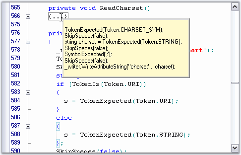

Outlining Tooltip is displayed for each collapsed outlining block, and it shows the contents of the collapsed block. This feature is similar to the one available in Visual Studio.NET editor.
The Outlining Tooltip can be optionally shown / hidden by using the ShowOutliningTooltip property in the Edit Control.
|
[C#]
this.editControl1.ShowOutliningTooltip = true; |
|
[VB.NET]
Me.editControl1.ShowOutliningTooltip = True |

Figure 35: Outlining Tooltip displaying the Collapsed Block of Text
Using Events
Edit Control supports the following Outlining Tooltip events.
|
Edit Control Event |
Description |
|
OutliningTooltipBeforePopup |
Occurs when outlining tooltip is about to be shown. |
|
OutliningTooltipPopup |
Occurs when outlining tooltip is shown. |
|
OutliningTooltipClose |
Occurs when outlining tooltip is closed. |
The OutliningTooltipBeforePopup event is used to control the visibility of the outlining tooltip. The ShowMode property of the OutliningTooltipBeforePopupEventArgs is used for this purpose. By default, the ShowMode property is set to On.
|
[C#]
private void editControl1_OutliningTooltipBeforePopup(object sender, Syncfusion.Windows.Forms.Edit.OutliningTooltipBeforePopupEventArgs e) { // To display the outlining tooltip e.ShowMode = OutliningTooltipShowMode.On;
// To hide the outlining tooltip e.ShowMode = OutliningTooltipShowMode.Off; } |
|
[VB.NET]
Private Sub editControl1_OutliningTooltipBeforePopup(sender As Object, e As Syncfusion.Windows.Forms.Edit.OutliningTooltipBeforePopupEventArgs) Handles editControl1.OutliningTooltipBeforePopup
' To display the outlining tooltip e.ShowMode = OutliningTooltipShowMode.On
' To hide the outlining tooltip e.ShowMode = OutliningTooltipShowMode.Off
End Sub |
See Also